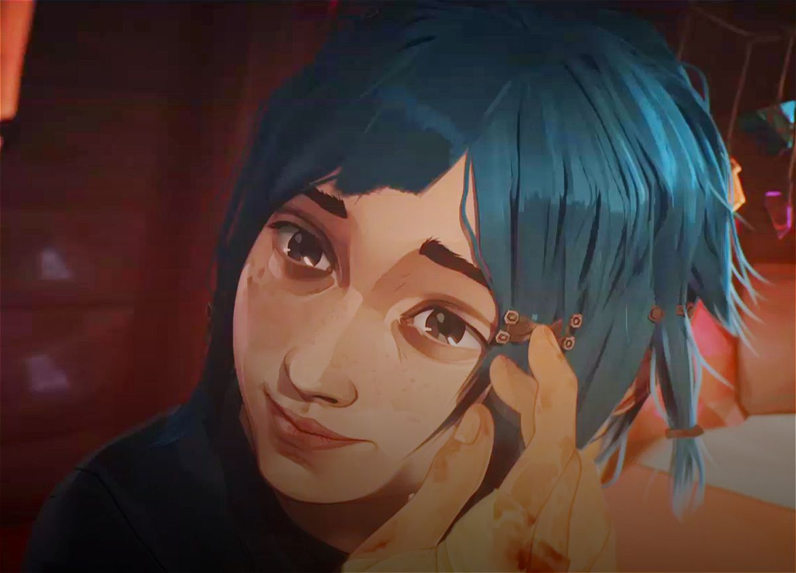
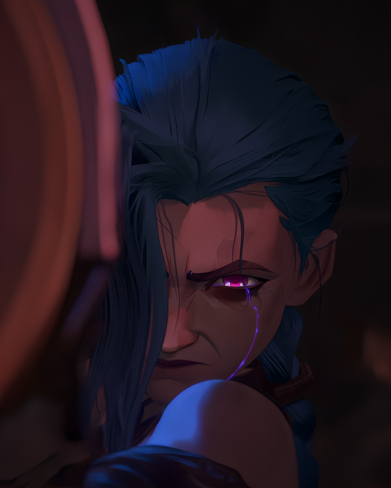

Jinx, formerly known as powder, Vi's sister is rescued by vander after both their parent are killed in battle during a war caused by Vander and silco. The war raged uponn the upper city by the under city resident was with an aim of making the under city indipendent,an indipendent nation known as nation of zaun.vander takes both powder and Vi and raises them together with Claggor and Mylo their adopted brothers
.webp)
After their loot from the upper city that led to them blowing up a building accidentally using hex stonesand consequently being chased and hunted by the piltover enforcers,they head back to the under city where the mission is messed up by powder who throws the loot into the sea when being chased by one of Silco's hunchmen.the enforcers eventually make their way to the under city in search of the kids.vander is eventually forced to turn himself in for the sake of his children. marcus betrays his fellow enforcer by accepting money from silco who uses a monster he created from shimmer to kill the enforcers together with benzo and captures vander
in an attempt to rescue vander,vi is almost killed when powder uses the hex stones and causes an explosion which leads to both Claggor and Mylo dying.Vander eventually dies while rescuing Vi frim an explosion powder comes clean to Vi that she was the one that caused the explosion.Vi is pissed and leaves powder who is found by silco .vi tries to call out for powder but her efforts are rendered useless by Marcus who captures her and jails her.silco takes powder as his child.she evenually changes her name to jinx.

Silco expands his shimmer industry leading to war with the upper city . jinx is later hurt during the war and is treated using shimmerand her eyes turn purple on developing some powers. jinx later kills silco and launches an RPG to the council
for more info watch arcane an netflix
,VISIT NETFLIX